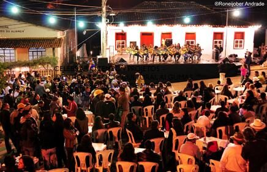

Planeje sua visita a Ipoema
Entrada gratuita, casarão histórico e a hospitalidade tropeira esperando por você.
-
Endereço
Travessa Professor Manoel Soares, 217 – Centro
Ipoema, distrito de Itabira – MG
CEP 35905-000
Em frente à rodoviária de Ipoema -
Horário de funcionamento
Terça a sábado: 8h30–12h e 13h–17h
Domingos e feriados: 9h–12h e 13h–16h
Fechado às segundas-feiras -
Telefone e e-mail
(31) 3839-2991
museutropeiro@yahoo.com
Grupos devem ser agendados com antecedência -
Entrada
Gratuita
Sala de exposição, sala de artesanato, multimeios e rancharia
Como chegar
Ipoema fica a cerca de 70 km de Belo Horizonte, distrito de Itabira, na Estrada Real. O museu fica no centro do povoado, em frente à rodoviária.
Roda de Viola de lua cheia
De maio a outubro, nos sábados de lua cheia, o museu recebe a tradicional Roda de Viola, com apresentações dos grupos Lavadeiras de Ipoema, Estaladores de Chicote, Comitiva do Berrante, Sons da Tropa, Meninos Trovadores da Estrada Real e violeiros convidados.
Confirme datas por telefone antes de planejar sua viagem, pois a programação segue o calendário lunar e pode variar.

Fale com o museu
Dúvidas, agendamento de grupos ou solicitação de acesso ao acervo para pesquisa, escreva para nós.
Este formulário ainda não está conectado a um envio real de e-mail. É uma demonstração de funcionamento para a versão de apresentação do site.
Acessibilidade
O museu está em fase de revitalização, incluindo a construção de uma nova rampa de acesso para tornar o percurso plenamente acessível. Saiba mais sobre o projeto →
Redes sociais
Perfis oficiais em fase de padronização. Em breve, os links serão adicionados aqui.